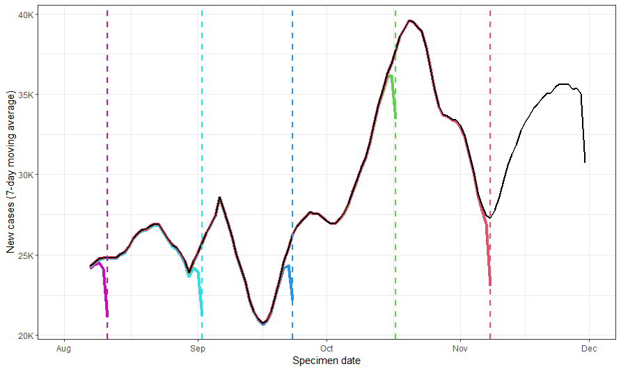
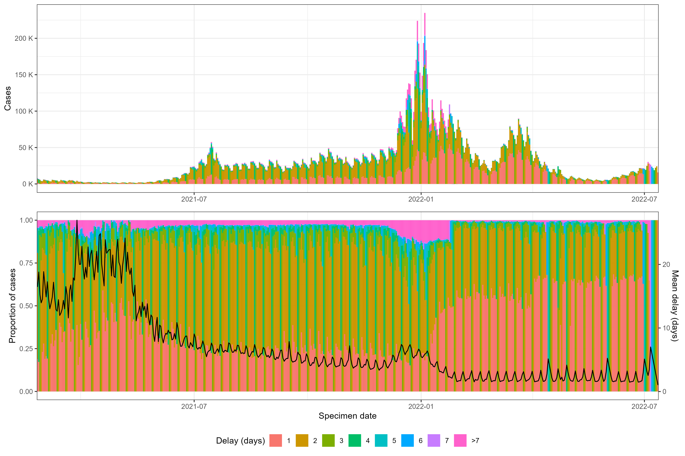
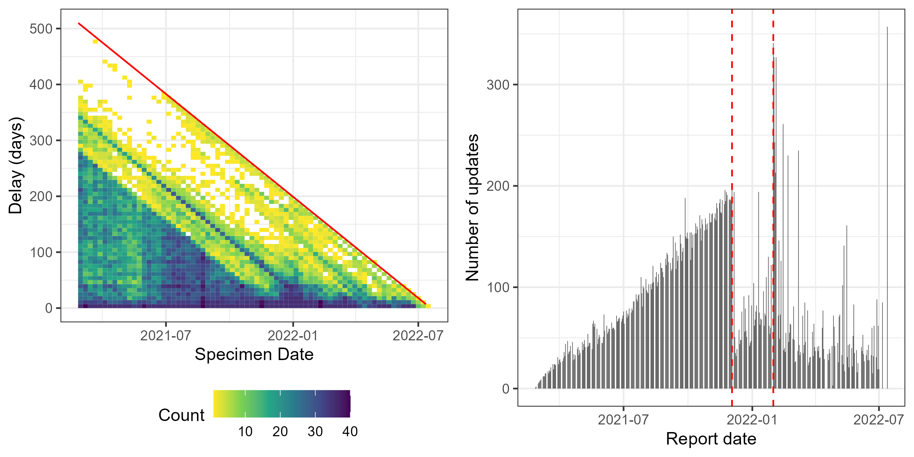
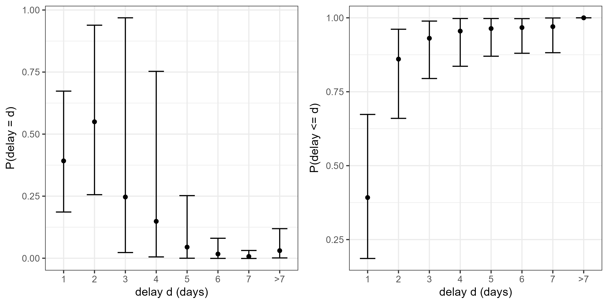
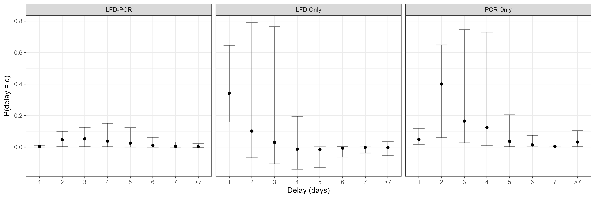

Nowcasting COVID-19 incidence in England
1 Introduction
Epidemiological indicators often suffer from reporting delays, including delays between disease onset, testing, and reporting. This results in newly reported indicators being a lagging indicator of past events.
 Colors represent data as it was reported at various reporting dates.
1.1 Objective
The objective of this paper is to nowcast the number of new COVID-19 cases by specimen date in England.
2 Methods
2.1 Dataset
- UK COVID-19 dashboard, containing archived data
- Feb 2021 to present
- Reported weekdaily until Jul 2022, then weekly
2.2 Nowcasting model
Consider the distribution of notifications \(n_{gtd}\) by time of reference \(t\) and reporting delay \(d\) conditional on the final observed count \(N_{gt}\) for each dataset \(g\), such that \[N_{gt}=\sum_{d=0}^Dn_{gtd}\] where \(D\) represents the maximum delay between the time of reference and time of report. Theoretically, \(D\) can be infinite, but in practice and for operational purposes, it is set to be a finite value. For each dataset \(g\), the notifications which occur at \(t\) are summed to follow a multinomial distribution with \(N_{gt}\) trials and a probability vector \(p_{gtd}\) of length \(D\).
The objective of nowcasting is to predict the final observed counts \(N_{gt}\) given available information up to time \(t\). To do this, it is necessary to estimate the probability vector \(p_{gtd}\) jointly with the expected number of final notifications \(\lambda_{gt}=\mathbb{E}[N_{gt}]\).
2.2.1 Expected final notifications
The expected final notifications
\[\begin{aligned} \log(\lambda_0) &\sim N(\log(N_{g0}+1),1), \\ \log(\lambda_t)|\lambda_{t-1} &\sim N(\log(\lambda_{t-1}), \sigma^2)\\ \sigma &\sim N(0,1) \end{aligned}\]2.2.2 Delay distribution
The delay distribution \(p_{gtd}\) is estimated using a discrete-time logistic hazard model \[h_{gtd}=\mathbb{P}(\text{delay}=d|\text{delay} \geq d, W_{gtd})\] where \(W_{gtd}\) is decomposed into 3 components:
- Hazard derived from a parametric delay distribution \(\gamma_{gtd}\) dependent on covariates at time of reference
- Hazard not derived from a parametric delay distribution \(\delta_{gtd}\) dependent on covariates at time of reference
- Hazard dependent on covariates referenced to the time of report \(\epsilon_{gtd}\)
Parametric hazard at reference time
The first component \(\gamma_{gtd}\) can be thought of as the probability of reporting \(p'_{gtd}\) at a given time \(t\) if it followed a parametric distribution. Here, the probability follows a discretised log normal distribution as such
\[\begin{aligned} p'_{gtd} &\sim \text{LogNormal}(\gamma_{gt},v_{gt})\\ \gamma_{gt} &= \mu_0 + \alpha_\mu X_{\gamma}+\beta_\mu Z_\gamma\\ v_{gt} &= \exp\left(v_0 + \alpha_v X_\gamma + \beta_v Z_\gamma\right) \end{aligned}\]The distribution is normalised so it sums to 1. The resulting parametric logit hazard, which is the probability of report at a given time given that it has not already been reported for this component of the model is \[\gamma_{gtd} = \text{logit}\left(\frac{p'_{gtd}}{\left(1-\sum_{d'=0}^{d-1}p'_{gtd'}\right)}\right)\]
2.3 Scoring rules
3 Results

(top) New cases by specimen date. Colors represent the delay during which cases were reported. (bottom) Proportion of new cases that are reported by varying delays. Black line represents mean delay.

(left) The frequency of updates by specimen date and delay. The hue intensity reflects the number of updates made to the number of new cases on each specimen date with a delay indicated by the y-axis. The red diagonal line represents the maximum possible delay for each specimen date. (right) The number of updates made to past data on each reporting date. The red dotted lines represent two significant change points: the left marks when the linearly increasing number of updates ends, and the right highlights a particular reporting date on which there was an unusually large number of updates made to past data.
 (left) The mean proportion of cases reported with a delay \(d\) for any specimen date, with 95% confidence intervals. (right) The mean proportion of cases reported by a delay \(d\) for any specimen date, with 95% confidence intervals.
The distribution of reporting delays is right-skewed, which has a the greatest mean proportion at \(d=2\). Cumulatively, 97.4% of cases are reported by day \(d=7\). This suggests that it would be practical to take a maximum delay to be \(d>7\).

The majority of cases reported initially are confirmed by LFDs whilst PCR results experience a longer lag. Due to false positives, the cases confirmed by LFDs also update in the negative direction. Lastly, the proportion of cases confirmed by LFD and PCR within 3 days forms the smallest proportion of total cases reported and is slightly less right skewed than PCR only cases. This is consistent with the understanding that the reporting lags for both a LFD and a PCR test are expected to be larger than just a PCR test.

Sample output of 7-day nowcast conducted in September 2021. Triangles represent eventually reported cases, while points represent the number of cases reported on the first day. Solid and dotted lines represent the mean and median nowcast, and the darker and lighter shaded regions represent the 90% and 30% confidence intervals.
4 Discussion
- Test types, dealing with removals
- Specimen date \(\neq\) onset date
5 Conclusion
- Summarise findings
- Restate relevance to current literature
- Explain why this matters
- Express direction for future research